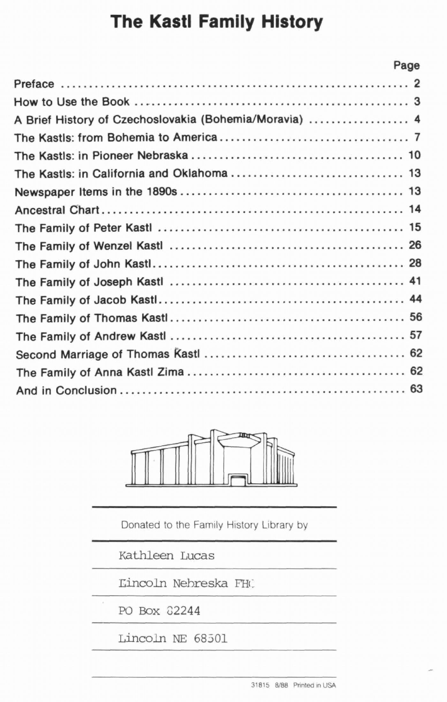

The book · Front matter
Contents The Kastl Family History


Transcription
The Kastl Family History
| | Page | |---|---| | Preface | 2 | | How to Use the Book | 3 | | A Brief History of Czechoslovakia (Bohemia/Moravia) | 4 | | The Kastls: from Bohemia to America | 7 | | The Kastls: in Pioneer Nebraska | 10 | | The Kastls: in California and Oklahoma | 13 | | Newspaper Items in the 1890s | 13 | | Ancestral Chart | 14 | | The Family of Peter Kastl | 15 | | The Family of Wenzel Kastl | 26 | | The Family of John Kastl | 28 | | The Family of Joseph Kastl | 41 | | The Family of Jacob Kastl | 44 | | The Family of Thomas Kastl | 56 | | The Family of Andrew Kastl | 57 | | Second Marriage of Thomas Kastl | 62 | | The Family of Anna Kastl Zima | 62 | | And in Conclusion | 63 |
Transcriber’s notes
Table of contents. The lower half of the page is a library donation bookplate (not part of the printed book); its building drawing is therefore recorded under annotations, not photos. 'Nebreska' is as typed on the bookplate.
Library stamps and handwriting (not part of the book)
- Family History Library donation bookplate pasted/printed in lower half: line drawing of the library building above the text 'Donated to the Family History Library by', typed entries 'Kathleen Lucas / Lincoln Nebreska FHC / PO Box 82244 / Lincoln NE 68501' (FHC partly cut; first digit of box number and the 5 in 68501 faint), small print '31815 8/88 Printed in USA'